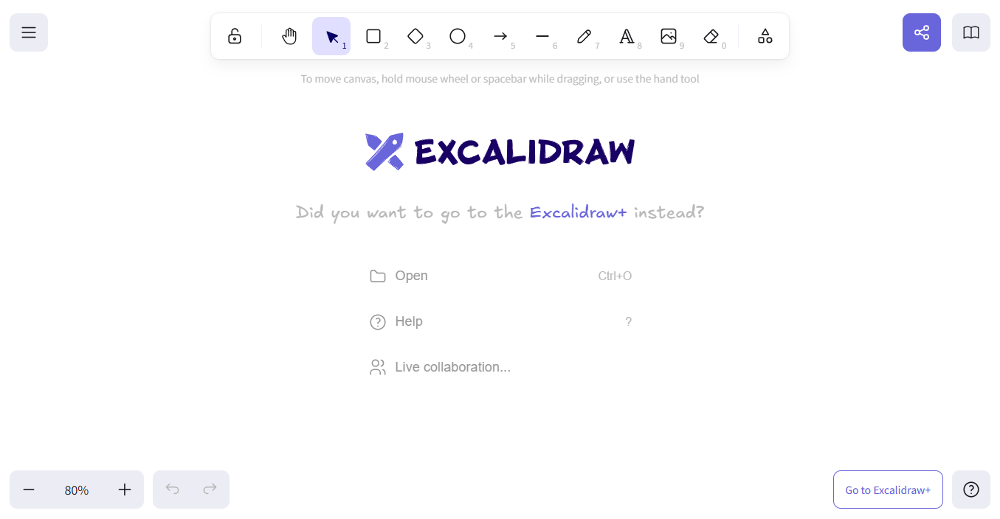

Praktische Tipps f√ºr den Unterricht¶
Technische Tipps¶
Office Account
Bei der vom bfz bereitgestellten Mail + Passwort handelt es sich um einen Office-Account. Also Mail, Word, Excel usw. sind enthalten.
Officeprodukte im Call gemeinsam bearbeiten
Video
 Word, Excel, usw. Dokumente können über den Button " Freigeben" > " Zusammenarbeiten in Teams"
Word, Excel, usw. Dokumente können über den Button " Freigeben" > " Zusammenarbeiten in Teams"
Hände heben und senken
Wozu: Sichstellen, dass eine Aufgabe von ALLEN erfüllt ist, bevor weitergemacht wird.
Wie: Teilnehmer bitten die Hand zu heben, wenn die Aufgabe erfüllt ist. So kann man sehen, bei wem es hackt. Gehobene Hände haben, den vorteil, dass sie sichtbar bleiben.
Die Hände können vom Trainer über die Buttons Personen > ... > Alle Hände senken wieder heruntergenommenw werden
Achtung: Wenn die Hand eines Teilnehmers gehoben ist und er dann spricht, wird die Hand automatisch wieder gesenkt! Der Teilnehmer muss dann ans erneute heben errinnert werden.
Oft müssen die Teilnehmer dazu erzogen werden diese Kultur konsequent durchzuführen.

Bildschirmübernahme
 Wenn ein Teilnehmer seinen Bildschirm teilt, so kann über den Button
Wenn ein Teilnehmer seinen Bildschirm teilt, so kann über den Button Übernehmen ein Anfrage an den Teilnehmer gestellt werden, dass Du den Bildschirm steuern kannst. Diese muss noch von dem Teilnehmer bestätigt werden.
peinliche Momente vermeiden
Bevor du den Bildschirm teilst, solltest du sicherstellen, dass sich nichts darauf befindet, dass du nicht teilen m√∂chtestüò±
Bildschirm vs. Fenster teilen
Bei Teams kann man den Gesamten Bildschirm oder nur ein einzelnes Fenster teilen. Darauf muss der Teilnehmer hingewiesen werden. Vor allem dann, wenn wichtige Unterfenster auftauchen und sie bei einer einzelnen Fensterübergabe nicht sichtbar sind.
Alle im Blick
Um alle Teilnehmerkacheln gleichzeitig zu sehen, kann man die Anzahl der angezeigten Kacheln Unter Ansicht > Max. Galariegröße auswählen > 49 Personen erhöhen.
Weiterhin kann man mit Ctrl+- im Teams-Anruf herauszoomen. Das sorgt dafür, dass man die Namen der Teilnehmer wieder erkennt. Oder man drückt Ctrl und dreht mit dem Mausrad.
Gruppenräume
Als Eröffner des Meetings kannst du Gruppenräume erstellen!

Um die Räume tatsächlich zu öffnen musst du noch auf den Button Räume öffnen klicken.

Whiteboard
Du kannst direkt in Teams ein Whiteboard öffnen und mit den Teilnehmern nutzen,
indem du unter Teilen das Microsoft Whiteboard auswählst.

Ein anderes Whiteboard-Tool ist Excalidraw. Auch hier kann ein Link über die -Taste erstellt werden.

Chat im BlicküëÅ‚Äçüó®
Einige Teilnehmer nutzen größtenteils/ausschließlich den Chat zur Kommunikation mit dem Trainer/der Gruppe. Halte ihn also im Auge.
Gründe dafür sind häufig eine extreme Schüchternheit oder eine laute Umgebung.
Umfragen mit dem Chat
Teams bietet leider keine Abstimmungsfunktion. Jedoch kann man die Optionen einer Abstimmung einfach in den Chat als einzelne nachrichten formulieren und die Teilnehmer bitten, bei ihrer favorisierten Option einen Daumen zu geben.
technische Probleme beim Teilnehmer
Wenn ein Teilnehmer technische Probleme hat, soll dieser sich bei seinem Support, besser noch beim Team vom bfz melden. Dabei sollen sie immer ihre SFI-Nummer mitgeben, die auf ihrem Rechner steht, wenn vorhanden.
Dateisharing
Dateien können mit den Teilnehmern über das Register "Dateien" in Teams geteilt werden.
Teams anpassen
Um die Anzeige in Teams übersichtlicher zu gestalten, kannst du Unter " Einstellungen" vom Raster in eine Listenanzeige wechseln.

Wähle Unter " Chat und Kanäle" im "Layout" die "Liste" aus.

Die Teams werden nun als Liste angezeigt. Um alle Klassenkanäle, die bisher versteckt sin zu sehen, öffne zuerst " Teams verwalten" bei einem der Teams.
Hier kannst du nun auswählen, welche Kanäle angezeigt werden.

Trainer Kamera an
Als Trainer haben wir die Kamera (außer in den Pausen) an. Auch in Selbstlernphasen zeigen wir den Teilnehmern so unsere Verfügbarkeit an.
Die Teilnehmer können wir nicht dazu verpflichten Ihre Kamera an zu machen, jedoch können wir sie dazu animieren.
Didaktische Tipps¶
Keine Vorstellungsrunden
Die Teilnehmer kennen sich (teilweise seit mehreren Jahren). Die 10-te Vorstellungsrunde ist überhaupt nicht mehr spannend.
Baby Steps beim Vortanzen
Wenn Dinge auf dem Bildschirm vorgemacht werden, die von den Teilnehmern nachgemacht werden, dann sollte das sehr kleinschrittig passieren und häufig nachgefragt werden, ob die Schritte von allen Teilnehmern nachgemacht werden konnten.
Die Teilnehmer sind schnell abgehängt und haben oft wenig und teilweise gar keine Erfahrung im Umgang mit den Programmen, der IDE. Daher sollten auch so einfache Dinge, wie das Anlegen eines Ordners in VS-Code besser vorgemacht werden.
Keine Antwort ist nicht böse gemeint
Wenn Teilnehmer nicht auf Fragen antworten, gibt es zwei Gründe: Schüchternheit und Unwissenheit.
Ein erprobtes und valides Mittel, um Teilnehmer hervorzulocken, ist diese direkt per Name aufzurufen.
Selbstlernphase
In der Selbstlernphase sollen den Teilnehmern eine Aufgabe gegeben werden. Diese wird auch dokumentiert.
Regelmäßiges Fehlen oder Stören
Bei Auffälligkeiten bezüglich eines Teilnehmers (z.B. keine Rückmeldung im Unterricht, Störungen, andauernden technischen Problemen) soll eine Mail an das Team von bfz gehen.
Gutes Miteinander
Achtet darauf nicht zu viel Zeit mit privaten Themen zu vergeuden.
Das Angebot einzelnen Teilnehmern Nachhilfe anzubieten, wurde in der Vergangenheit von anderen Teilnehmern als Bevorziehung verstanden. Angebote immer für alle geben.
Keine Buchempfehlungen
Bitte keine Buchempfehleungen wie "Dieses Buch braucht ihr für den Unterricht" oder "Mit diesem Buch besteht ihr auf jeden Fall" geben.
Die Teilnehmer verstehen das leicht falsch als eine Verpflichtung dieses Buch kaufen zu müssen.
Höchsten können sehr vorsichtige Sätze fallen, wie: "Dieses Buch finde ich gut zu dem Thema".
keine Aufzeichnungen üìπüö´
Es ist weder den Trainern, noch den Teilnehmern gestattet Aufzeichnungen vom Unterricht zumachen.
Sollte ein Teilnehmer dies dennoch tun, ist der Unterricht sofort zu unterbrechen, bis die Aufnahme beendet ist. Sollte ein Teilnehmer wiederholt versuchen den Unterricht aufzunehmen, ist er dem Unterricht zu verweisen und es soll Kontakt zum Support vom bfz aufzunehmen.
Pausenzeiten einhalten
Die Teilnehmer haben vorgeschriebene Pausenzeiten, die eingehalten werden sollen.
An den Standorten der Teilnehmer haben alle Gruppen (nicht nur deine) gleichzeitig ihre Pausen. Dies erlaubt einen geregelten Arbeitsablauf an den Standorten.
Keine Auskünfte geben, die man nicht geben kann
Teilnehmer haben oft Fragen, die über den Unterrichtsstoff hinausgehen. Z.B. wie dir Prüfungen ablaufen werden.
Beantwortet diese Fragen nicht, sondern bittet die Teilnehmer diese Fragen direkt an das Team vom bfz zu stellen.
Umgang mit ChatGPT
Den Teilnehmern ist ein guter Umgang mit ChatGPT und anderen LLMs beizubringen.
Gut ist dabei der folgende Leitsatz:
Nutze die KI nicht, um Dinge machen zu lassen, sondern, um sie zu verstehen!
nicht blo√üstellenüò≥
Wenn ein Teilnehmer sich auffällig verhält (z.B. offensichtliche KI-Lösungen präsentiert oder nicht ansprechbar ist), nutzt zunächst die Möglichkeit eines Zweier-Gesprächs. Eine Befragung vor der gesamten Klasse wird oft als Bloßstellung empfunden und ist somit wenig zielführend.
Die Teilnehmer haben oft ein persönliches Gepäck oder eine einnehmende familiäre Sitation, die sehr ablenkend für sie sind. Verständnis und ein respektvoller Umgang sind sind da der Schlüssel für ein gutes Miteinander.
Exakte Anwesenheiten erhalten
In einem Teams-Call lässt sich unter "Personen" > ... > "Anwesenheiten herunterladen" Eine Excel mit den exakten Ein- und Ausloggzeiten herunterladen. Die ist nur möglich, wenn ihr selbst den Unterricht gestartet habt.
Unterrichtsplanung¶
Prüfungen und Abkürzungen
Die Ausbildung der Teilnehmer dauert 2 Jahre in Vollzeit und 3 Jahre in Teilzeit.
Es gibt zwei Arten von Teilnehmer/innen:
- Umschüler
- Teilqualifikation (TQ)
Die Ausbildung ist in 6 Module aufgeteilt.
Die Module bestehen aus ca. 8 Wochen Theorieunterricht (mit uns Trainern) und 6 Wochen Praxis in einem Praktikumsbetrieb (ohne uns Trainer). Danach noch mal eine Woche Prüfungsvorbereitung (mit uns Trainer).
Am Ende der Module findet für die Umschüler eine "Tertialprüfung" (TP) statt. Diese wird manchmal auch als "Modulprüfung" bezeichnet. Für die Teilnehmer der Teilqualifikation findet am Ende jedes Moduls eine "Kompetenzfeststellung" statt.
Nach den Modulen 3 und 6 findet jeweils eine Abschlussprüfung der IHK statt.
| Abkürzung | Bedeutung | Wann |
|---|---|---|
| TQ | Teilqualifikation | |
| TP | Terialprüfung | am Ende jedes Moduls für Umschüler |
| KFS | Kompetenzfeststellung | am Ende jedes Moduls für TQ-ler |
| AP1 | Zwischenprüfung der IHK | am Ende von Modul 3 |
| AP2 | Abschlussprüfung der IHK | am Ende von Modul 6 |
| FISI | Fachinformatiker Systemintegration | |
| FIAE | Fachinformatiker Anwendungsentwickler | |
| SFI | Nummer des Teilnehmerrechners | |
| LPB | Lernprozessbegleiter |
Alte Prüfungen
Sie finden im LMS unter "Prüfungsvorbereitung der AP 2 (FIAE)" und "Prüfungsvorbereitung der AP 2 (FIAE)" Links zu alten Abschlussprüfungen.
Kalender der Klassen
Im LMS findet man Unter dem Reiter "IT-BERUFE" und dann "FACHINFORMATIKER/IN AE" oder "FACHINFORMATIKER/IN SI" eine Kachel zu jedem einzelnen Kurs.
Dort findet man unter der Kachel "4. Kalender" die Kalender der Klassen. So kann man sehen, wo sich die Teilnehmer gerade inhaltlich befinden.
Ist alles Installiert?
Hier ist die Liste der Software, die sich auf den Rechner der Teilnehmer befinden sollte. Wenn der Unterricht stark auf einer Software basiert, sollte schon einige Wochen vorher geprüft werden, ob diese Installation korrekt funktioniert. Dies kann z.B. geschehen, indem eine Mail an die Teilnehmer gesand wird, dass ein kleines Beispielskript und das Ergebnis einer erfolgreichen Durchführung, samt Mini-Anleitung enthält.
Diese Mail kann über das Team des bfz an die richtige Klasse gesandt werden.
Hier eine Vorlage:
1 2 3 4 5 6 7 8 9 10 11 12 13 14 15 16 17 18 19 | |
keine anderen Programme
Bitte Installiert keine neuen Programme mit den Teilnehmern auf ihren Rechnern.
"Private"- oder "Community"-Angebote der Programme sind hier rechtlich falsch.
Wenn du ein bestimmtes neues Programm im Unterricht nutzen möchtest, stimme das bitte mit dem Team des bfz ab. Sei jedoch vorgewarnt, dass es höchstwahrscheinlich nicht zu einer Installation von neuen Werkzeugen kommen wird. Finde also am besten einen Weg mit den bestehenden Mitteln zurecht zu kommen.
Die Liste alle Programme, die bei den Teilnehmern installiert sind, findest du hier.